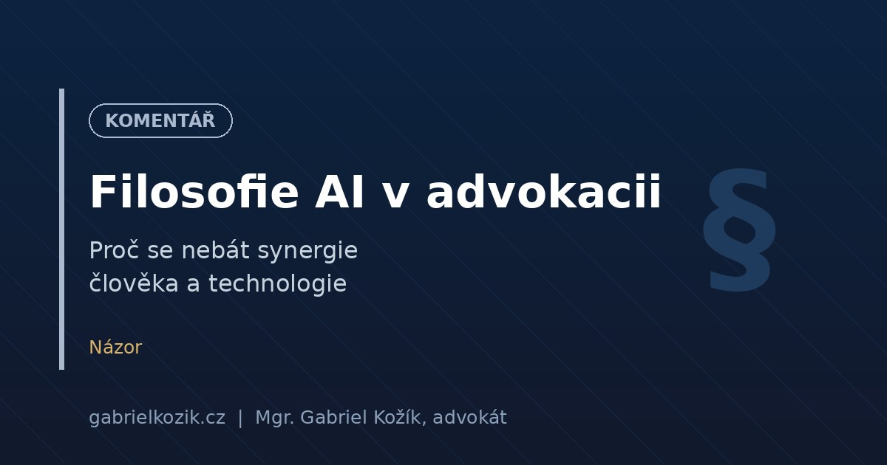

Filosofie AI v advokacii: Proč se nebát synergie

Často se mě lidé ptají, jestli se nebojím, že mě jako advokáta jednou nahradí algoritmus. Odpovídám, že ne. Stroje totiž nemají empatii ani strategické myšlení, které jsou pro řešení složitých právních sporů klíčové. Od chvíle, kdy jsem v prosinci 2022 začal experimentovat s prvními chatboty a později (od února 2024) začal denně využívat Google AI Studio a Gemini, se moje práce od základu změnila. Nepracuji méně – pracuji jinak a s mnohem větší hloubkou.
Zajímavé je, že největší síla AI nespočívá v psaní smluv, ale v interpretaci a hledání souvislostí. Nepoužívám technologie jako automatické generátory textů, ale jako sparring partnery pro analýzu komplikovaných právních otázek.
Proč synergie?
Například když jsem potřeboval zmapovat judikaturu týkající se informační povinnosti jednatele vůči společníkům, využil jsem Codexis AI. Hledal jsem konkrétní zákonné limity – tedy za jakých okolností a jakým způsobem může jednatel v souladu se zákonem o obchodních korporacích odmítnout společníkovi poskytnutí informací. Jednoduše jsem si potřeboval potvrdit některé své závěry a opřít je o recentní judikaturu. Codexis AI mi během několika minut vyhledal relevantní rozhodnutí Nejvyššího soudu, analyzoval argumentaci soudů a přehledně shrnul mantinely pro obě strany. Jako advokát bych vyhledáváním strávil vyšší desítky minut až hodiny. Ušetřený čas jsem mohl rovnou věnovat formulování konkrétních doporučení pro klienta.
Moje filozofie integrace AI stojí na několika principech. V prvé řadě jde o porozumění kontextu klienta, nikoliv mechanické opisování paragrafů. AI mi umožňuje jít pod povrch a nacházet souvislosti, které by lidskému oku mohly při časovém tlaku uniknout. Dále je to zefektivnění rutinní práce a eliminace administrativních chyb. Nejdůležitějším bodem je však přístup Human-in-the-loop – každou větu, kterou systém navrhne, osobně kontroluji a doplňuji o svou expertízu. Za výstup ručím já, ne stroj.
V praxi například zejména v poslední době intenzivně pracuji i s agentním systémem Antigravity od Google, a to za účelem optimalizace procesů při tvorbě webu a prezentací. I když tyto pokročilé agenty nevyužívám přímo v právním světě, ukazují mi směr, jakým se efektivní správa projektů bude ubírat.
Bariéra mezi technologiemi a tradiční advokacií padla. Kdo to nepochopí a bude dál trávit desítky hodin mechanickým přepisováním šablon, ten na trhu moderního byznysu brzy ztratí konkurenceschopnost. Umělá inteligence nenahradí advokáty, ale advokáti s AI nahradí ty bez ní.
← Zpět na přehled článků